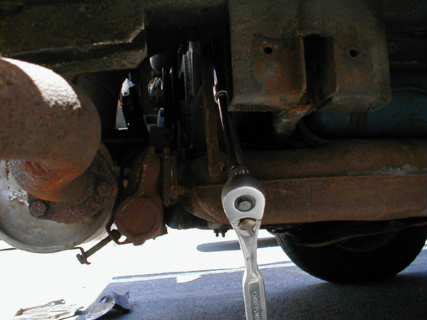

Alternator Removal and Replacement
APPLICATION: This should cover all Type 4-engined Buses from '72-'79. This procedure does not apply to air-cooled Vanagons due to the different fan housing and alternator mounting (Vanagon owners have it much easier when it comes time to replace the alternator). It may also apply to the Porsche 914 and the Volkswagen 411 and 412 to some extent but I don't really know. Those who have '73-'74 Buses with the air pump may have a little extra disassembly to do. I did this on a '79 so it will for sure directly apply to all the '76-'79 fuel injected Type 4 Buses.
First step is to read over this procedure in the Bentley and/or the Haynes. I found the Haynes procedure pretty much copied the Bentley procedure, but it didn't go exactly like either one suggested. Still, they are good starting points.
You'll need a pretty good complement of standard tools and of course your new (rebuilt) alternator. Also if you are unsure about the condition of the cooling duct that goes from the fan housing to the alternator, then I suggest you pick up a new one. Bus Depot has them for about $15. It would suck to get all the way inside and find out you have to wait to complete the job because your cooling boot has a split in it. It is rubber, after all. BTW the one I got from Bus Depot looks to be OEM, it has the VW/Audi logo on it and everything. Explains why it was $15, probably came from the dealer :-)
OK, open up the engine lid and let's get to work.
The alternator is really buried deep in there on a late Bus. But at least you don't have to pull the engine like you do in '71 and earlier. Though it would certainly be an easier job if you did.
First thing you want to do is get the belt off. So, undo the screws that hold the fan screen and timing scale on. Pull off the fan screen and timing scale and the 3 screws and set them all aside. Now pull the plastic plug out of the slot in the tin for the alternator adjustment. Get your 6mm allen socket out and loosen the alternator tension adjusting bolt. Push the alternator over to the left to slacken the belt and remove it. If you can't quite get it off, get it started and then crank the engine backwards, that will get it right off. If the belt is looking ratty, what better time to replace it?
To get the alternator out, you need to remove the right rear piece of engine tin. To remove that piece of tin, you need to remove the oil fill tube. The top part of the tube is plastic and the part that goes into the engine case is metal. They are joined right above that right rear piece of tin, the top part just fits over the bottom part and there is a stout spring clip there holding the fill tube in place. Get out your pliers and squeeze the two tabs of the spring clip together. Then with your other hand, pull up on the plastic part of the tube. Wiggle it a little if you have to. Once it comes off, set it aside. Take a paper towel or a rag or something and stuff it into the open oil fill tube so you don't drop any little bits of hardware down in there. That will ruin your whole day.
You also need to take the dipstick out, so take it out, wipe it off and set it aside.
Now it's time to remove the tin. There should be 3 screws that hold it in place. Once is to the right of the alternator itself, where the right rear tin joins the upper cylinder cover. It's partially hidden by the engine seal. There is another one straight back from the dipstick area, again partially hidden by the engine seal (this was missing on mine). Also there is one that you have to access from underneath, it comes up through the tin. It's in the area right below the fan. Once you get the screws out, lift the tin up and to the right and slide it off the oil fill tube, then remove it from the car.
Now you need to remove the tin that covers the alternator itself. There is one screw where the tin joins the upper cylinder cover tin. Undo that one, then undo the 10mm bolt to the left of the alternator. The only other thing holding that tin in is the lower alternator mounting bolt. So now it's time to take care of that one. The bolt has a D-shaped head so there's not much you can do on that end. The nut on the other end is accessible only from under the car. So crawl under with your 13mm open-end wrench. Look up in the area above the engine bearer bar, stick your wrench up between the bearer bar and the heat exchanger and you'll find the nut. Go ahead and remove it and the washer and put them aside. There's not a lot of room to swing the wrench there so it's slow going.
When you get back topside, you need to now pull the lower bolt out. It helps if you get it started by levering it out a little. Wedge a screwdriver in between the bolt and the tin and lever it out, then you should be able to pull it out fairly easily. May have to support the alternator as you do so so it doesn't cause the bolt to bind up. Set the bolt aside for later.
Now pull that tin piece off as well as the plastic ring around the alternator that's behind the tin. If you are missing the plastic ring, you should get another one. It helps to seal around the alternator. If you don't have it, your engine could be running hot.
The Haynes manual says that the way to get the alternator out is to remove it complete with the adjusting track. I don't think this would work too well and I didn't try it. The track certainly has to come out, but I think it needs to come out on its own before the alternator comes out, due to all the stuff you have to do with the alternator before you can actually remove it.
So here's how I got the track out. First go ahead and completely remove the adjuster bolt. Stick a finger around and grap the little block that it screws into. Don't lose that. Notice it's made so that part of it sticks into the adjusting track. That's important when you go to put it back together.
On the track, one bolt holds the bottom of the track to the right side heat exchanger. The top of the track is held by a nut on a stud, the stud being from the fan housing. This is at an odd angle and forward of the track so it's tricky to get to and see. I first removed the bolt at the bottom. It was scary and rusty looking but it actually came loose with no trouble.
The top nut is trickier. You need to get a socket up there but the track is very close to that short pipe that ducts air from the fresh air blower in the engine room down into the heat exchanger. I removed the 10mm bolt where the pipe joins the heat exchanger to allow me some wiggle room. That was another scary rusty bolt but it came right out. I was then able to move the pipe enough to get the socket extensions in. I used a very long 3/8" extension plus another long 3/8" extension to give me the length I needed to reach the nut. Remove the nut and washer and put them aside. The track will also pretty much fall out at that point too so go ahead and put it aside.

OK now you've almost got this thing out. Crawl under again and look up near where you removed the nut from the lower alternator mounting bolt. Near there is the phillips screw for the clamp that clamps the cooling boot to the alternator. Loosen this screw up. I found it was easier to get the screwdriver in there if I removed the lower cylinder tin under the car.
Go back topside and now you get to maneuver the alternator. You need to turn it so the front (non-pulley end) is facing up. On the back of the alternator there is a metal plate attached via 3 nuts. You need to remove this plate to get to the wiring. So first pull the alternator to the right to disengage it from the cooling boot. Then turn it over (there is just barely enough space, this is the part where I think having the adjusting bracket attached would hamper your efforts) and undo each of the 8mm nuts. Grab the washers too and set them aside. Pull the plate off the alternator and you will find the wiring inside. There is a 3-prong plug for the wiring that goes to the voltage regulator, that just pulls off. There is a wire that goes to a post for the B+ connection, undo the 10mm nut and set it aside, then pull that wire off. Mine had the post under a little rubber cap.
Now that you have the wiring undone, you can finally remove the alternator from the van. Twist and turn and wiggle it until it's facing just the right way to get out between the body and oil filler tube and out it comes.
At this point you may want to inspect your cooling boot. Mine was in fine shape so I left well enough alone. I was tempted to replace it but I couldn't see how it connected to the fan housing. So now I have a spare.
This is the point where I needed a little professional help. I could not get the pulley nut off of the old alternator to swap the pulley onto the new one. So I took the new alternator and the old alternator and my gear puller (just in case) up to Pep Boys and had one of their guys do the swap with an impact wrench. I noticed that the new alternator had a slot in the shaft for a woodruff key. When I pulled the pulley off the old alternator, there was a place for a woodruff key, but no key. Hmm. Not having any spare ones lying around, I had the guy just go ahead and mount the pulley to the new alternator. It worked for at least 10,000 miles on the old one so hopefully it will continue to work with the new one. Had him zap the pulley nut on nice and tight. That may not be the best decision though, so if your old alternator has the woodruff key, by all means transfer it to the new one. The idea is to keep the pulley from spinning relative to the shaft. I've not had a problem like that but that doesn't mean it's a good idea to leave it out.
With my pulley now mounted to the new alternator, I went home to install it. Putting it back in really is the reverse of removal, and it takes just as long if not longer.
First thing you have to do is the wiring, so hook up the 3-prong plug and also the wire to the B+ post. Then re-attach the rear cover. There is a grommet where the wiring passes through the rear cover. Make sure this grommet is fully seated. If not, cooling air can escape and your alternator will run hot. Since the alternator backs right up to the right cylinder head, it needs all the cooling it can get.
Now put the alternator back into its normal position. Make sure you get the rear cover plate back into the cooling duct. This is a good time to re-install the adjusting track. Once you get the track back in place you might as well go ahead and re-seat that heat duct if you moved it. Don't forget to put the bolt back in.
Go ahead and get the adjusting bolt started. This is tricky because you can only get about one finger back behind the track to try and get it lined up with the upper hole in the alternator. Keep at it and you'll eventually get it. You don't need to go nuts, just thread it in enough to keep the thing from falling out.
The next step is to put the plastic ring and the alternator cover tin on. Go ahead and fit those. Start the 10mm bolt that holds that tin on but don't tighten it down all the way. The next thing you want to do is put the lower bolt in. This is the hardest part. First you need to line the lower hole in the alternator up with the bracket it fits into on the fan housing and then with the hole in the tin, doing all this while you attempt to fit the bolt in. Usually getting the bolt through the tin and bracket and into the alternator is no problem but coming out the other end it goes through the other end of the bracket and this is the hard part. I can't really offer any advice here. This always takes me a long long frustrating time. Look underneath and try to guesstimate in what direction and how far you need to move the alternator to get the bolt through the hole. I found I got best results if I moved the alternator to the left (like I was going to remove the belt) and snugged the adjusting bolt down to hold it there. I still had to wiggle it around to get it right and even then it was a fight. But eventually I saw those threads poking through. I got the nut on there and used that to pull the bolt all the way through. Keep in mind also that the bolt has a D-shaped head so it has to be oriented correctly on that end to fit right.
Once you get that in, go ahead and snug up that nut underneath. While you're under there, tighten up the clamp for the alternator cooling boot and then secure the under-cylinder tin if you removed it.
Topside, tighten the 10mm bolt that secures the alternator tin and also install the screw where the tin joins the upper cylinder tin.
Now you want to reinstall the right rear tin. This is pretty straightforward, however keep in mind that the left front edge of that tin (down below the fan) must go UNDERNEATH the tin that it overlaps there. If not, things won't line up right. Get the tin in, work the engine seal back into its proper position and then fit the screws.
Now you might as well go ahead and put the belt back on while the oil filler tube is out of the way. Loosen the adjusting bolt if you need to, then slip the belt on. If you can't quite get it on, cranking the engine forward helps. Then lever the alternator to put appropriate tension on the belt (the book says the belt should deflect 5/8" or 15mm) and then tighten the adjusting bolt.
Replace the plastic cap that goes over the adjusting bolt slot.
Take your rag out of the oil fill tube, then replace the plastic part of the oil filler tube. Make sure you get it fully seated. If you look at the oil fill tube, there are two slots cut into it, and if you look inside the plastic part, you see there are two protrusions that are designed to fit into these notches. When reinstalling the tube, push hard and twist it as you go, and you will feel it drop into those notches. When you have it installed correctly, you should not be able to twist it around. Of course, you have to do this while maintaining a firm squeeze on that spring clamp.
Reinstall the dipstick (make sure it's clean). Re-attach the timing scale and fan screen. Take a moment to double check and make sure you tightened/replaced everything you loosened/removed. Then fire it up. Make sure the alternator light on the dash goes out and then go to the back with a multimeter and see what kind of voltage you get. You should see about 13.8v or so at idle and it should go up around 14+v at higher engine speeds.
Clean up and have a beer, you're all set.
Sean Bartnik
May 19, 2002
Back to the tech page.